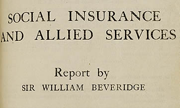
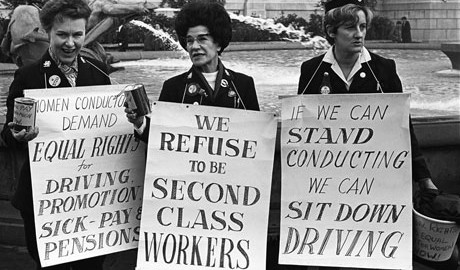

Bristol People’s Question Time
March 12, 2015
On 10th March, Bristol People’s Assembly hosted People’s Question Time at City Road Baptist Church in Stokes Croft.
In the panel were Rufus Hound (Comedian and Actor), Pastor Eric Aidoo (from the Church), Romaine Phoenix (Chair of The People’s Assembly), John McInally (Vice President, PSC Union) and Sauda Kyalambuka (Educator and Board member of African Voices Forum).
Hound opened with the remark that in this age of austerity, the rich got richer. He used the analogy of vampires living up in a high castle feeding on inhabitants of a village nearby idly standing by offering up members of their community as victims so that the rest can go on living. It would be unthinkable from our perspective to let that carry on happening and yet, the way that the corporations are leeching off our civilisation is exactly the same thing using austerity as an excuse. Therefore, he suggest that we ‘Kill the Vamps’!
Vampire Capitalists from ‘What We Do In The Shadows’ (well worth a watch).
One question that was whirling in my mind was: how does austerity make the rich richer? One way of thinking about it is that a government, which is in theory an institution held up by the people it is representing has the power to print as much money as it likes, that is if it wants to! However, every time it prints money, the people whom it hurts the most is the rich as they have a larger share of the wealth and more of it gets devalued. It is therefore in the interest of the politicians, especially if they have a right wing agenda, that they try to maintain the value of the wealth of the richest. So if printing money is not on the cards, the only other way to maintain a stable government is by slashing funds, which is what we see today.
However, austerity also gives another advantage to the wealthiest. Squeezed funds means that the public sector cannot operate as effectively as it needs to. It therefore enables private companies to take over public serves using the rhetoric that the private sector can introduce efficiencies to the public sector, which is something we are all too familiar with.
Then someone in the panel pointed out that Capitalism is just one way of organising the planet. In 1995, bosses had 45 times the average pay now that figure is up to 180 times.
McInally drew attention to the 1942 Belveridge Report which was the foundation for NHS as something positive to come out of the Second World War which would be for the benefit of everybody. However, recent reorganisation is preparing it for privatisation. Privatisation in this context is nothing more than a transfer of wealth from the state to the richest. PFI scheme introduced by the Labour party and expanded by the Tories puts pressure on NHS branches to repay debt at the expense of quality of care that it provides. NHS is the most cost effective health care system in the developed world and this is what is at stake.

Belveridge Report
Immigration was also discussed. With 60 percent of cuts promised by the Tories yet to come, Hound reminded everyone that Politician’s job was to sell people dreams. He used the analogy of ‘Old White Men’ who want to keep things the way they are (to reflect the large demographic of UKIP voters) to bring up the point that politicians are selling them the idea that only if immigrants or any other marginalised groups were to not exist, all the problems would disappear.
A representative from Bristol Women’s Voice also spoke about how women were the group hit hardest by austerity as there have been cuts to funds provided to single parents and 92% of single parents are women. They are unable to get childcare, unable to attend interviews and unable to get jobs. Within this group BME community are being hit even harder as it is even more difficult to have access to language training and other forms of skill development.

Women standing up to injustice
There was a plead for solidarity from a woman who had travelled all the way down from Gloucestershire to tell everyone a story of how her family has recently been victims of racist abuses after some members of EDL moved in next door making life extremely unpleasant for them. Things had escalated as far as going to the court after attempts to ask help of local conservative politician backfired when they were told that they should move elsewhere. For those of you who can, lets give them solidarity on 23 March at Gloucester court when they have a hearing.
Someone recommended watching this documentary called Salma which is about a South Indian girl who is locked away by her family in her cottage as soon as she reaches puberty and not allowed to attend school. I am not entirely sure how it fits into the context of the discussion? Maybe I misheard it.
Save these important dates for the calendar:
- Women’s Question Time - 12 March 2014
- People’s March for the NHS - 14 March 2014
- Gloucester Racism Court Case Solidarity Action - 23 March 2014
And check out these organisations in Bristol if you want to get involved in some grass-root activism:
- ACORN - community action group that mobilises action for issues like housing crisis etc.
- Bristol Women’s Voice
- South-west TUC
- The Bristol Party
- Bristol People’s Assembly
- Bristol Green Party